The metagam package offers a way to visualize the heterogeneity of the estimated smooth functions over the range of explanatory variables. This will be illustrated here.
Simulation
We start by simulating 5 datasets using the gamSim()
function from mgcv. We use the response \(y\) and the explanatory variable \(x_{2}\), but add an additional shift \(\beta x_{2}^{2}\) where \(\beta_{2}\) differs between datasets,
yielding heterogeneous data.
library("mgcv")
#> Loading required package: nlme
#> This is mgcv 1.9-1. For overview type 'help("mgcv-package")'.Fit GAMs
Next, we analyze all datasets, and strip individual participant data.
models <- lapply(datasets, function(dat){
b <- gam(y ~ s(x2, bs = "cr"), data = dat)
strip_rawdata(b)
})Meta-Analysis
Next, we meta-analyze the models. Since we only have a single smooth
term, we use type = "response" to get the response
function. This is equivalent to using type = "iterms" and
intercept = TRUE.
meta_analysis <- metagam(models, type = "response")Next, we plot the separate estimates together with the meta-analytic fit. We see that dataset 3, which had a positive shift \(\beta=1 x_{2}^2\), lies above the others for \(x_{2}\) close to 1, and opposite for dataset 5.
plot(meta_analysis, legend = TRUE)
We can investigate this further using a heterogeneity plot, which visualizes Cochran’s Q-test (Cochran (1954)) as a function of \(x_{2}\). By default, the test statistic (Q), with 95 % confidence bands, is plotted. We can see that the confidence band for Q is above 0 for \(x_{2}\) larger than about 0.7.
plot_heterogeneity(meta_analysis)
We can also plot the \(p\)-value of Cochran’s Q-test. The dashed line shows the value \(0.05\). The \(p\)-value plot is in full agreement with the Q-statistic plot above: There is evidence that the underlying functions from each dataset are different for values from about 0.7 and above.
plot_heterogeneity(meta_analysis, type = "p")